Создание игр в Roblox Studio
Основы анимации
Подготовка к работе и теория
Что такое анимация?
В этом занятии мы начнём изучать следующую большую тему - анимацию в Roblox Studio.
Анимация - это процесс добавления движений статичным объектам. Это могут быть как трехмерные, так и двумерные объекты. Само название «анимация» происходит от латинского слова anima - душа. То есть, анимация - это процесс «вселения» в объекты души, чтобы сделать их «живыми».
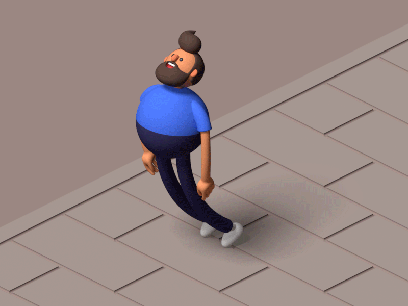Скорее всего, вы уже знакомы с базовым приемом анимации: на разных листах блокнота последовательно рисуются разные движения персонажа и при быстром пролистывании этих рисунков персонаж начинает «двигаться». Это основной принцип анимации, который лежит в основе как трехмерной, так и двумерной анимации.
В Roblox Studio анимируются объемные объекты, то есть мы работаем с трехмерной анимацией. Она несколько сложнее, чем анимация двумерная, но при этом технически гораздо проще.
Как работает анимация?
Любой персонаж в компьютерной игре, как и любой двигающийся неживой объект, изначально представляет из себя обычную 3D-модель, ничем не отличающуюся от других объектов в игре. Принцип анимации трехмерных объектов достаточно сложен, но очень интересен. Он взят из реальной жизни и действует по тем же принципам, что и движение человеческого тела.
Внутри любого двигающегося объекта, как внутри человеческого тела, находится система из костей и суставов, называющаяся скелетом. На самом деле, во время анимации двигаются именно они, а 3D-модель «прикрепляется» к скелету и следует за управляющими ею костями. Таким образом, при изменении положения кости или повороте сустава вы видите движение тела персонажа.
В базовых персонажах Roblox Studio используется упрощенная система анимации, основанная на связанных частях тела персонажа. Однако, если вы будете анимировать более сложных персонажей, состоящих не из отдельных деталей, а полноценных моделей, вам придётся работать именно со скелетной системой.
В этом занятии мы познакомимся с основами анимации и будем использовать самого простого персонажа.
Создание персонажа для анимации
Чтобы приступить к анимации персонажа, сначала необходимо его создать. Для этого используем встроенный плагин, который называется Rig Builder. Перейдите на вкладку Avatar и найдите его в списке (он не требует установки и устанавливается по умолчанию).
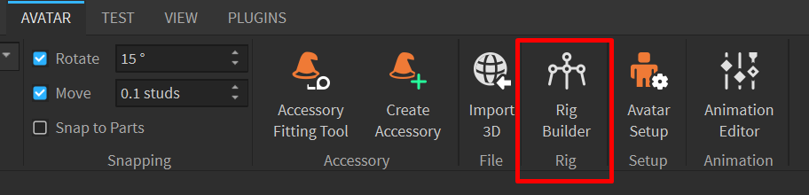Появится окно выбора рига персонажа. Риг - это система строения персонажа. В Roblox существует два базовых типа персонажей - R6 и R15.
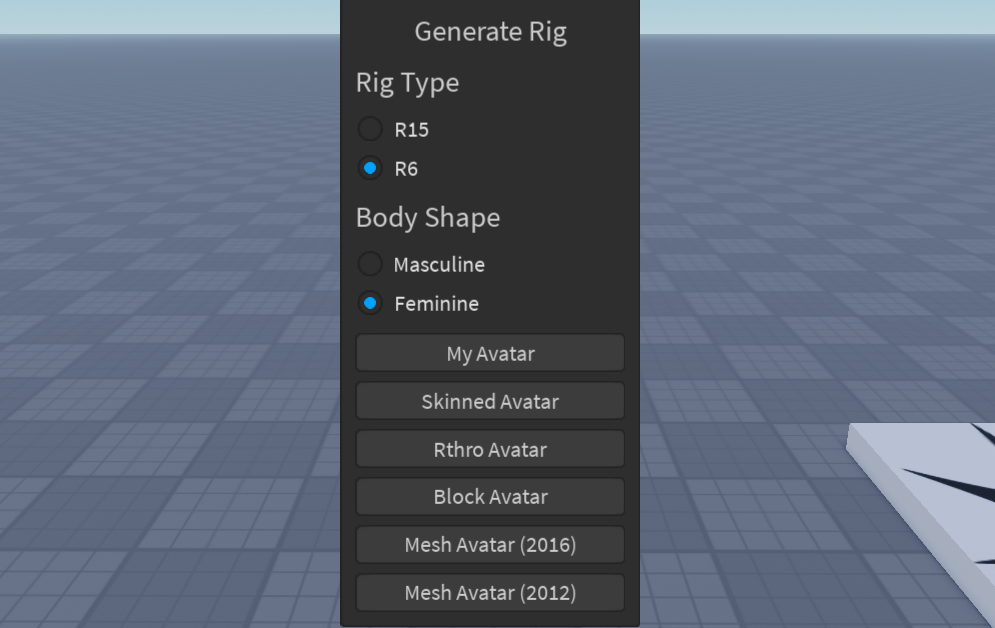Эти названия - обозначения количества суставов внутри персонажа. Риг R6 состоит из шести частей тела: две ноги, две руки, туловище и голова. В R15 ноги и руки состоят из трех деталей, позволяющих делать более сложные и реалистичные движения, тело разделено на верхнюю и нижнюю части.
Для простоты работы в этом занятии мы выберем R6. Переключитесь на соответствующую вкладку и выберите Block Avatar. После этого у вас будет создан персонаж.
Создание анимации
Окно анимации
Теперь можно приступать к изучению анимации. Выберите персонажа и в во вкладке Avatar найдите следующий встроенный инструмент - Animation editor.
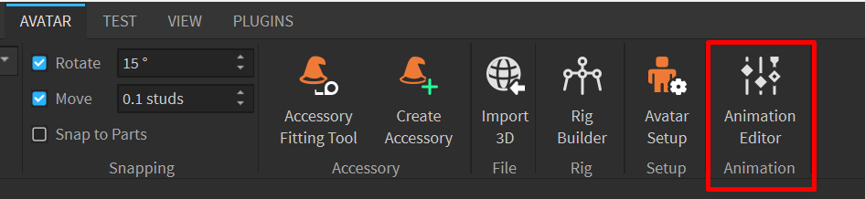Этот плагин позволяет создавать анимацию непосредственно внутри Roblox Studio. В левом верхнем углу окна нужно ввести название анимации. Мы будем создавать анимацию приветствия, в которой персонаж будет махать рукой. Поэтому введите название Wave Hand.
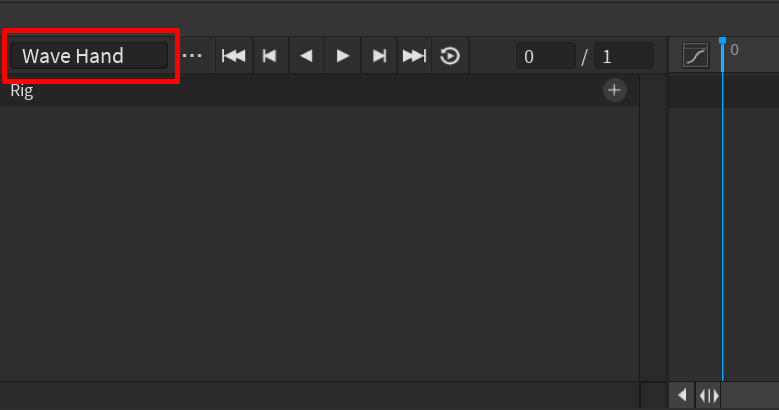После этого активируется редактор анимации. Окно разделено на три главные области: настройки анимации, список анимируемых деталей, а также поле для ключей и таймлайн - самая большая часть окна находящийся справа.
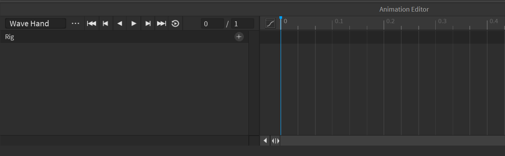Подготовимся к анимации. Чтобы иметь возможность анимировать части тела персонажа, их нужно добавить к списку анимируемых объектов. Для этого нажмите на иконку с плюсом около имени персонажа. В выпадающем списке вы можете выбрать конкретную часть тела, которую хотите анимировать, или добавить сразу все детали персонажа.
Так и поступим - выберем самый нижний вариант - Add All Body:
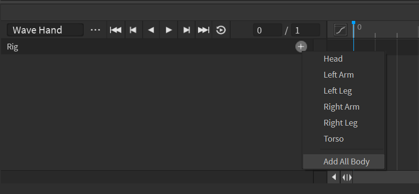В список слева добавятся все части тела персонажа и теперь, нажимая на имя деталей, можно выбирать каждую деталь по отдельности.
Ключ анимации
Анимация - это плавное изменение параметров объектов (в нашем случае поворотов и положений) с течением времени. Чтобы изменять состояние объекта, необходимо записывать их в разные моменты времени.
Roblox будет автоматически записывать их, создавая для выбранной детали так называемые ключи, когда вы измените ее состояние. Ключ анимации - это сохранённое состояние анимированного объекта в отдельный момент времени. Вам не обязательно создавать все движения персонажа, как вы бы делали это в двумерной анимации (вспомните пример с блокнотом и отдельными кадрами на каждом листочке).
Вместо этого вы можете записать в первом кадре одну начальную позу персонажа, а в последнем - изменить ее на финальную. Таким образом, вы создадите всего две ключевые позы, а остальные движения между ключевыми кадрами Roblox просчитает самостоятельно.
В первую очередь необходимо записать начальное положение персонажа - его первую ключевую позу. Для этого нужно, чтобы Roblox записал ключи для всех частей тела. Найдите верхнюю пока что пустую строку ключей напротив имени персонажа.
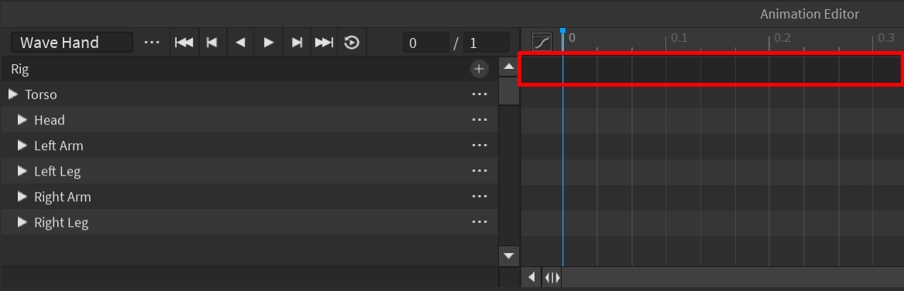Кликните по ней правой кнопкой мыши и выберите опцию Add Keyframe Here. Обратите внимание: у вас добавились серые ромбы около каждой части тела и белый ромб на верхней строке. Это - ключи. Белый ключ - это главный ключ кадра. Он изменяет все нижние ключи. Серые - ключи отдельных частей тела, они отвечают только за состояние своей детали. Теперь состояние персонажа в первом кадре записано, и мы можем переходить к анимации руки.
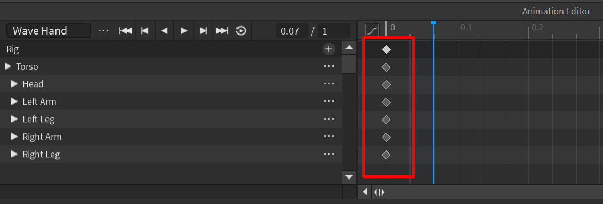Анимация руки
Анимации состоят из кадров, в каждом из которых персонаж производит какое-то движение. Кадры можно сравнить с минутами и секундами. Каждая минута делится на 60 секунд. Если разделить 1 секунду на более мелкие отрезки времени, получится, что за одну секунду пройдет какое-то количество более коротких «мгновений». Эти мгновения и называются кадрами. Каждый кадр - это лист бумаги с нарисованным движением персонажа из примера с блокнотом.
В 1 секунде может быть неограниченное количество кадров, однако, в индустрии есть несколько стандартов: 24, 30 и 60 кадров в секунду. В зависимости от количества кадров в секунду, меняется сложность анимации.
Вы можете увидеть обозначение кадров в верхней полосе рабочей области Animation editor. Эта полоса называется таймлайн. Перемещая синий слайдер по таймлайну, можно прокручивать анимацию между кадрами и записывать состояние персонажа в выбранных кадрах.
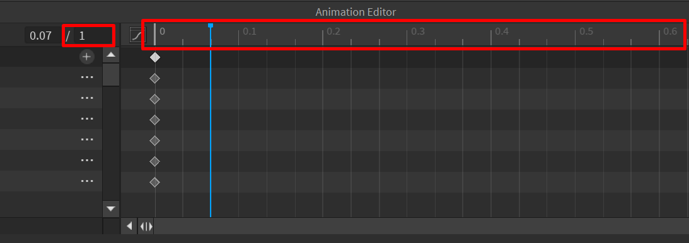С помощью слайдера перейдите в 1-й кадр (то есть отметка 0.1 на таймлайне) и выберите правую руку персонажа. Поверните руку персонажа наверх на 90° по оси Z (синяя окружность). В таймлайне добавился новый ключ - Roblox увидел, что вы изменили положение руки, и сохранил новое положение в анимацию.
Так же с помощью слайдера перейдите во 2-й кадр (отметка 0.2) и поверните руку вверх по оси Z ещё на 90°. Рука будет расположена вертикально.
Попробуйте переместить слайдер таймлайна между кадрами 0 и 2 - вы увидите, что персонаж самостоятельно поворачивает руку между ключевыми кадрами.
Теперь нужно сделать так, чтобы персонаж помахал рукой. Перейдите в 3-й кадр и поверните руку по красной оси влево. Перейдите в кадр 4 и поверните руку вправо, чтобы персонаж помахал один раз. Теперь в анимации есть два движения руки: подъем наверх и поворот в сторону.
После этого в кадре 5 добавьте поворот влево, в 6-м - снова вправо. Теперь если прокрутить слайдер, персонаж помашет рукой.
В 7-м кадре опустите руку на 90° по оси Z, а в 8-м верните её в изначальное положение.
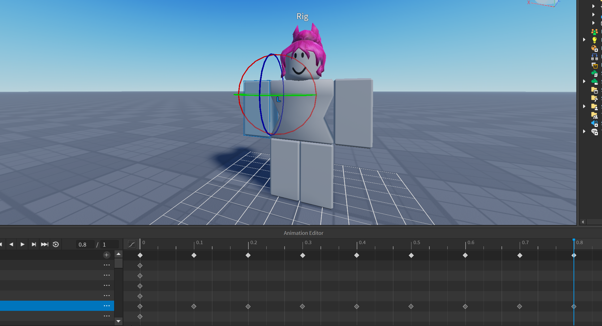Готово! Теперь можно запустить анимацию и посмотреть, как она работает. Для этого нажмите на кнопку play в панели управления анимацией.
Осталось сохранить анимацию. Для этого нужно нажать на три точки и выбрать Save.
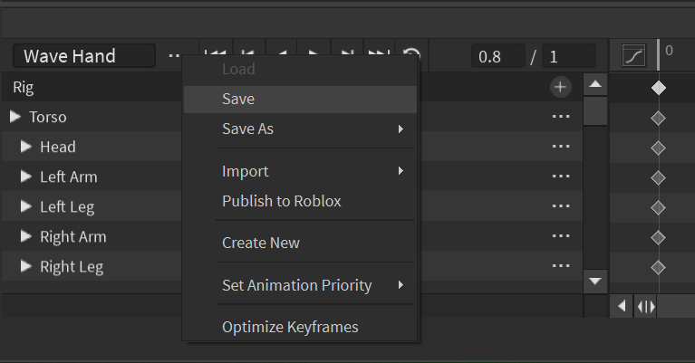По умолчанию анимации длятся максимум 1 секунду. Если вы хотите поменять длительность анимации, измените второе числовое значение рядом с кнопками управления анимацией.
Анимация прыжка
Перейдем к созданию более сложных анимаций. Принцип работы будет таким же, как и выше, однако, анимироваться будут все части тела персонажа.
Создайте новый клип анимации. Выберите значок с тремя точками около названия анимации и нажмите на вариант Create New.
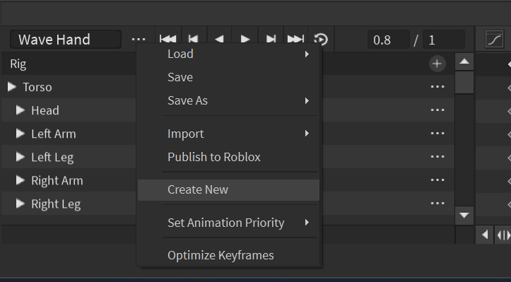Назовите анимацию Jump, для сохранения анимации нужно нажать на кнопку Save.
Добавьте к анимации все части тела персонажа - нажмите на кнопку с плюсом около имени персонажа и выберите Add All Body. Добавьте первую ключевую позу - нажмите правой клавишей мыши на строке с именем персонажа и выберите Add Keyframe Here.
Перейдите в кадр 2 и переместите персонажа наверх. Для этого выберите торс персонажа и переместите его вверх. Торс - главная часть любой живой модели, к которой прикреплены остальные части тела. Таким образом, перемещая только торс персонажа, вы перемещаете и все его конечности.
Добавьте повороты рукам и ногам персонажа.
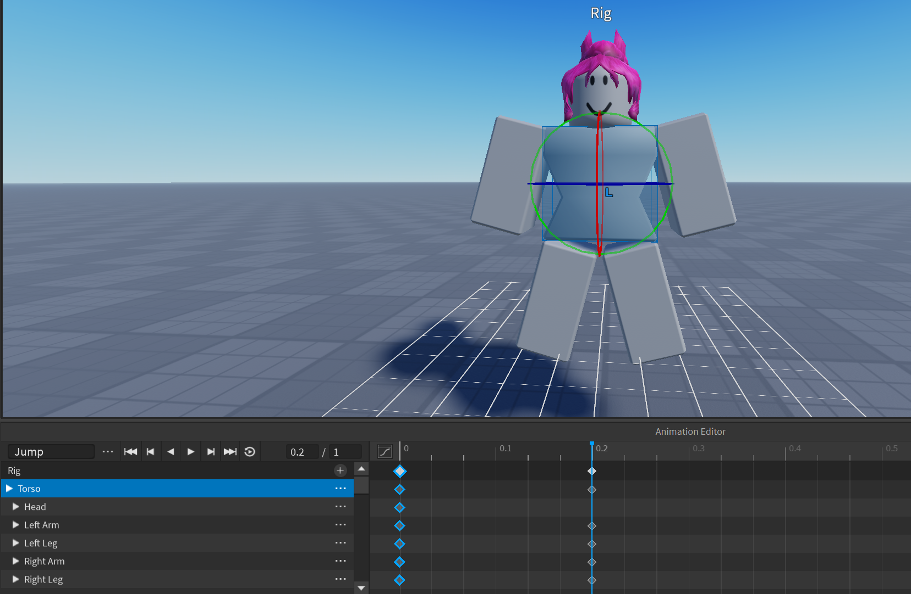Чтобы анимация не выглядела слишком резкой, добавим небольшое зависание персонажа в воздухе. Для этого скопируем состояние персонажа в кадре 2 и вставим его в кадр 4. Выберите белый ромб в кадре 2 и нажмите на него правой клавишей мыши, в выпадающем меню выберите Copy Selected.
Переместите слайдер в кадр 4, нажмите правой клавишей мыши в рабочей области и выберите Paste Keys. Теперь персонаж будет находиться в неизменном положении между 2-м и 4-м кадрами.
Таким же образом добавим падение персонажа. Перейдите в кадр 0 и скопируйте ключи персонажа. Переместите слайдер в кадр 6 и вставьте ключи.
Теперь у нас есть основные положения персонажа в прыжке. Если воспроизвести анимацию сейчас, она будет выглядеть слишком неестественно. Добавьте неоднородности движениям.
Перейдите в кадры, в которых персонаж находится в воздухе (2 и 4), и последовательно измените повороты его рук и ног так, чтобы они отличались между моментами, когда персонаж завис в воздухе и начал падать вниз. Воспроизведите анимацию - теперь она выглядит более живой. Однако, зависание в воздухе выглядит неправдоподобно.
Добавим средний кадр, который сгладит зависание. Перейдите в кадр 3 и выберите торс персонажа. Как и любой другой объект, подброшенный в воздух, персонаж немножко зависает в воздухе, перед тем как начать падать. Этот кадр продолжит движение персонажа вверх, но сделает это медленнее, за счёт чего мы и увидим замедление персонажа перед падением.
Переместите торс персонажа выше, но не так высоко, как вы делали это в первый раз. Воспроизведите анимацию - теперь движение персонажа вверх и вниз выглядит лучше.
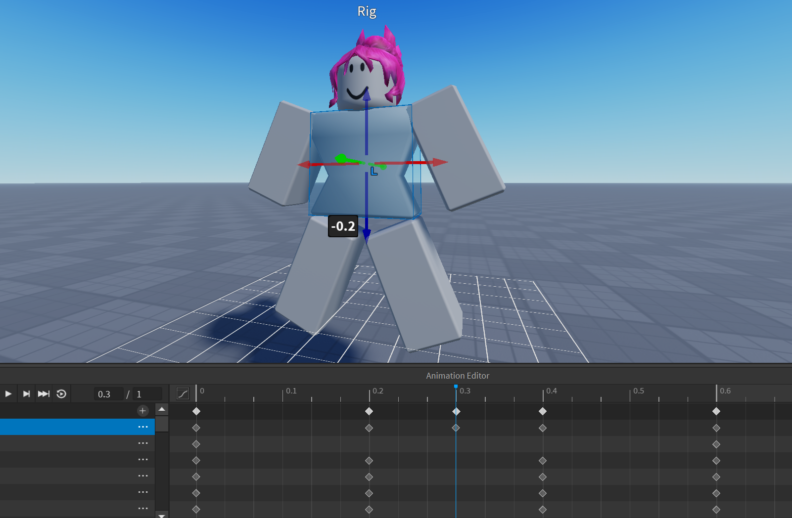Для улучшения анимации вы также можете добавить анимацию головы. В среднем кадре немного поднимите голову персонажа над телом, чтобы она «подпрыгнула» в пиковой точке. В следующем ключевом кадре переместите голову ближе к телу персонажа, но не соединяйте её. Теперь голова персонажа мультяшно подпрыгивает над телом в момент изменения направления движения и добавляет движениям больше жизни.
Сохраните созданную анимацию.
Домашкаа 😁
Нужно самостоятельно сделать ещё одну анимацию персонажа, используя полученные на занятии знания. Например, это может быть анимация какого-либо базового движения, эмоция, спортивное упражнение, получение урона и т.д. Не забудьте сохранить свою анимацию и карту :)